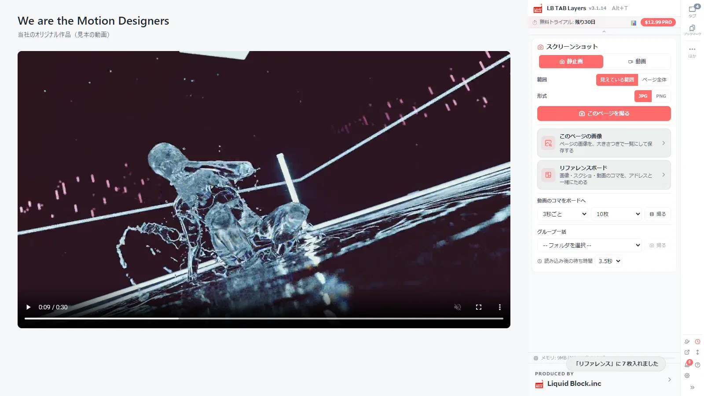

参考集めで困るのは、あとから「どこの画像だったか」「何秒の場面だったか」が分からなくなることです。LB TAB Layers のリファレンスボードなら、画像のアドレス・ページ・動画の再生位置と一緒に集められます。動画は 2〜10 秒ごとに自動で静止画にでき、集めたものは PowerPoint・PDF に並べて、出典の一覧つきで共有できます。
映像の仕事では、企画の段階で参考（リファレンス）を集めます。色の参考、カット割りの参考、文字の出し方の参考。打ち合わせでは「この感じで」と見せながら話します。
ところが、集めた画像をフォルダに保存していくと、あとで「どこから持ってきた画像か」が分からなくなります。動画の参考は、スクリーンショットだけ残っていて、何秒の場面だったかを探し直すことになります。
参考は、出どころと一緒に集める
参考を集めるときに一緒に残しておきたいのは、次の 3 つです。
- どのページの画像か — 確認したいとき、元のページに戻れる
- 動画なら、何秒の場面か — 打ち合わせで、その場面からすぐ再生できる
- なぜ選んだか — 「色」「テンポ」「文字の出し方」。一言あるだけで、伝わり方が変わる
LB TAB Layers のリファレンスボードは、この 3 つを画像と一緒に残します。
動画は、一定の間隔で静止画にする
参考の動画は、1 枚のスクリーンショットでは流れが分かりません。かといって、場面ごとに止めて撮るのは手間がかかります。
リファレンスボードの「動画のコマをボードへ」は、今の位置から 2・3・5・10 秒ごとに静止画を撮って、ボードに並べます。15 秒の CM なら、3 秒ごとで 5 コマ。カット割りやテンポの参考として、並べて見られます。
コマには再生位置が付き、YouTube と Vimeo は、押すとその秒から再生されるアドレスになります。
案件ごとに、ためておく
ボードは案件ごとに作れます。グループ（案件）を右クリックして「この案件のリファレンスボード」を選ぶと、その案件のボードが開きます。調べものの途中で見つけた画像は、右クリック →「画像をリファレンスボードへ」で、その場で入れておけます。
打ち合わせには、PowerPoint か PDF で
集めたものは、選んで PowerPoint か PDF に並べられます。作る前に、並べ方を選びます。
- 等倍 — 元の大きさのまま並べます。大きい画像と小さい画像の差がそのまま見えます。入りきらないときは、全部を同じだけ縮めます（何 % に縮めたかを書き添えます）
- 縮尺をそろえる — どの画像も枠いっぱいの大きさで並べます。見比べるときに向いています
各画像の下には番号とアドレス（動画は再生位置）、最後には出典の一覧が付きます。打ち合わせの相手に渡しても、どこの参考かが伝わります。画像だけを渡したいときは、ZIP（アドレスの一覧つき）にもできます。
参考の使い方は、それぞれの決まりに
集めた画像や動画の使い方は、それぞれのサイトや作者の決まりに従ってください。リファレンスボードは、打ち合わせや社内の共有のための参考の整理に使う道具です。
よくある質問
Q. 参考の動画を、一定の間隔で静止画にする方法は？
LB TAB Layers の「スクショ」→「動画のコマをボードへ」で、2・3・5・10 秒ごとに静止画を撮ってリファレンスボードに並べられます。各コマには再生位置が付きます。
Q. 集めた参考画像を、出典つきでまとめるには？
リファレンスボードから PowerPoint か PDF に書き出すと、各画像の下にアドレスが入り、最後に出典の一覧が付きます。ZIP では、アドレスの一覧（CSV）が一緒に入ります。
Q. 画像を大きさの違いそのままで並べられますか？
PowerPoint・PDF を作るときに「等倍」を選ぶと、元の大きさのまま並べます。入りきらないときは、全部を同じだけ縮めます。
▶ 実際の操作を動画で見る
サイドバーで、ブックマークとタブをいっしょに管理する様子です。